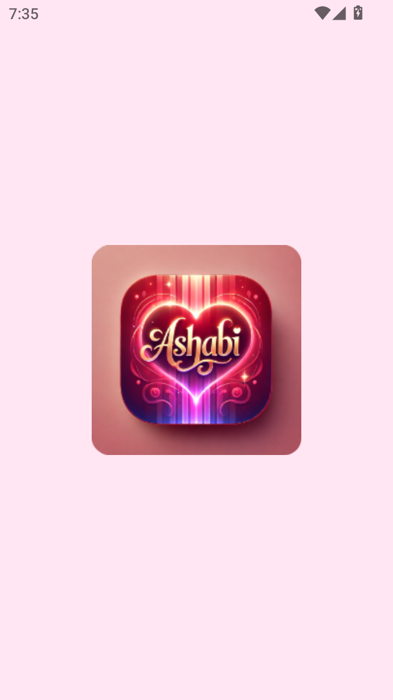
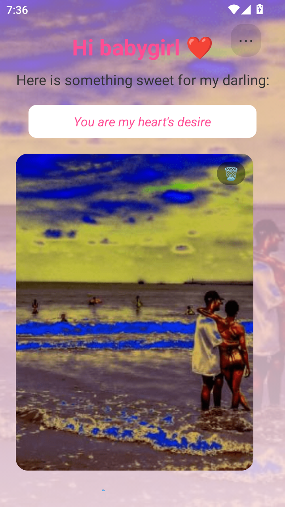
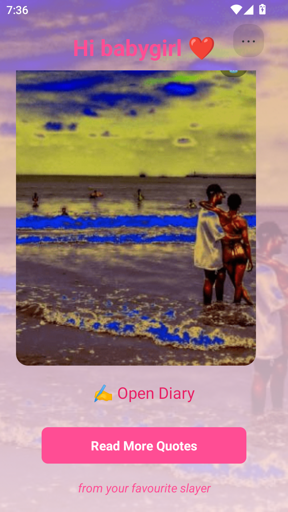
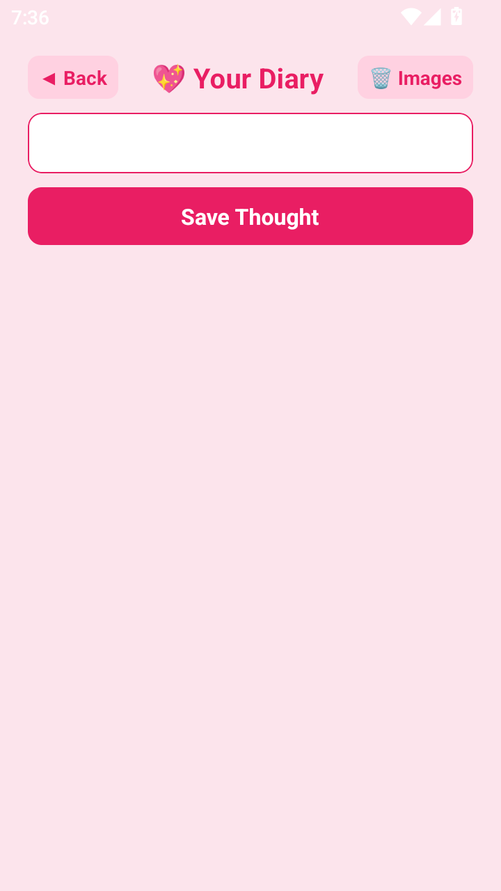
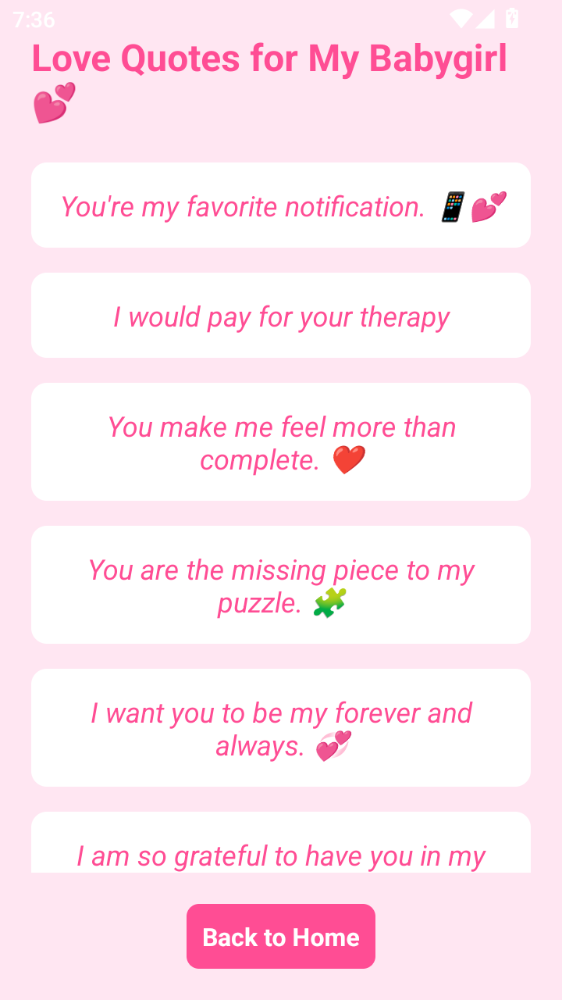

SyncShed
A personalized mobile application designed as a digital sanctuary for memories and reflections, built specially for a loved one.
Screenshots





A personalized mobile application designed as a digital sanctuary for memories and reflections, built specially for a loved one.




